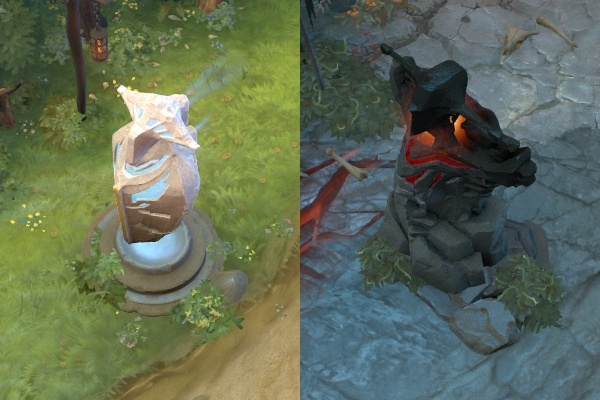
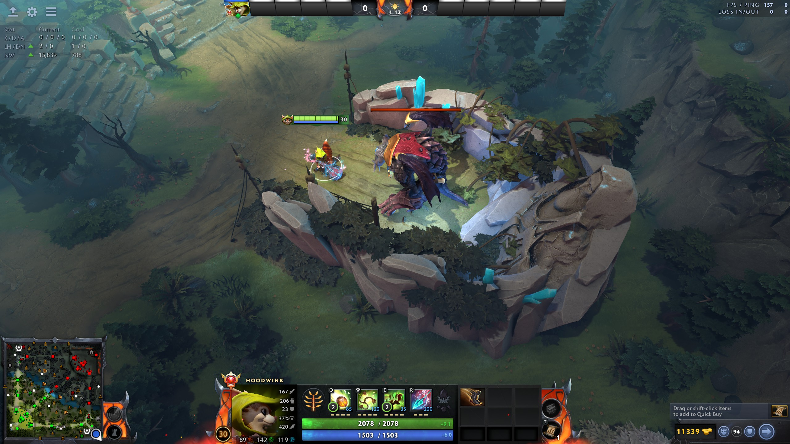
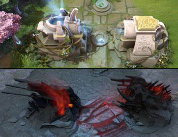
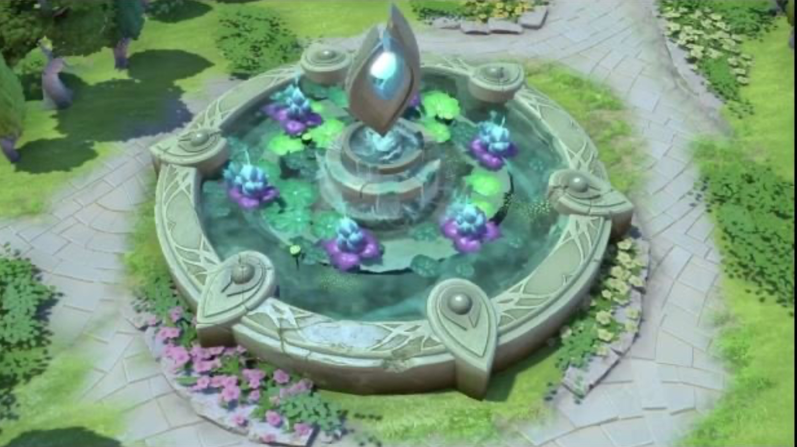
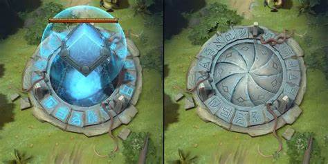
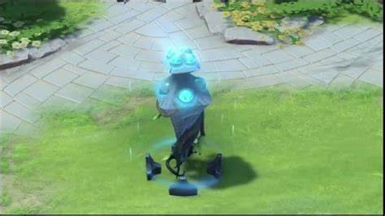

The map in Dota 2 can be described by a few basic structures. The top right and bottom left contain each teams Ancient. Branching from three sides are the Lanes. Each lane runs from one base to the other across the map. The side lanes hug the edges of the map and take a 90 degree turn at the corners. The middle lane goes straight through the map and crosses the river that divides both sides of the map.
|

Towers
Towers are placed along the lanes as defenceive structures against the opposing teams. |

Roshan Pit
A roshan pit is located at the bottom right and top left corners of the map. Roshan alternates between these as day and night changes. |
|

Barracks
Barracks sit behind the tier 3 towers in each base. Once destroyed, your team begins to produce stronger units. |

Lotus Pools
Located near the Roshan Pit on each side of the map, Lotus Pools produce fruit you can collect and consume for health and mana. |
|

Tormentors
Tormentors are mini objectives located directly outside of each base on the same sides as the Roshan Pits. Defeating these awards your team with an Aghanim's Shard. |

Watchers
Watchers are neutral structures scattered around the map that can be claimed to temporarily provide your team with vision of the area. |